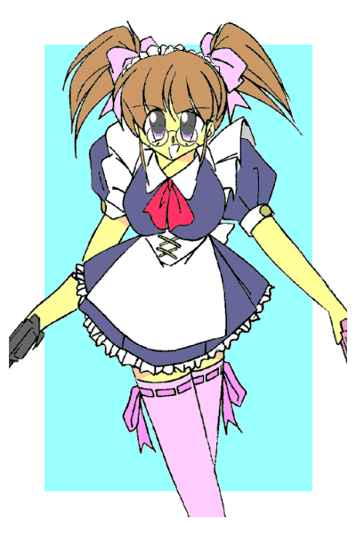
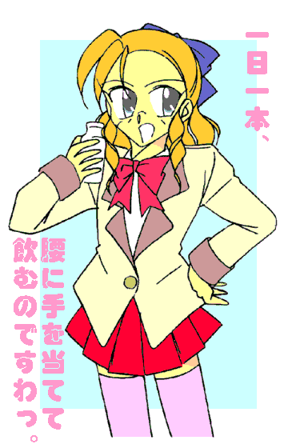

セーラとファルコンアマッドネスの戦いに、決着のついた次の日――
「あ、あの……市販のもので、間に合って、ますから――」
百紀市のとあるアパートの一室で、年老いた夫婦が困り果てていた。
「あ〜ダメダメ〜っ、市販のヤツは弱っちくて、殺虫剤慣れしたゴキブリはなかなか死なないっすから〜」
「その点うちのは大丈夫ですよ〜っ。ちょっとの量ですぐに死にますから〜」
「今なら一本、半額の千円でどうっすか〜っ？」
どう見ても堅気には見えない男が二人、ちゃらい口調で商品を「押し売って」いた。
玄関から閉め出されないように、ドアの隙間に自分の靴の先をねじ込む悪質さである。
「せ、千円っ！？ いくらなんでも、それは、ちょっと――」
「結果的には安上がりなんすから〜。ほんとに少しで済みますし〜」
「しかも〜、撒いておけば害虫が匂いを嫌って寄り付かない効果もあるんですよ〜。人間にはわからない微妙な匂いなんですがね〜」
「…………」
もう、かれこれ一時間近く “粘られて”
いる。
アパートの他の住人も助けてくれそうにない。そもそも昼間だから、仕事のない老夫婦が狙われたのだ。
結局は断りきれず、老夫婦は泣く泣くそれを買う羽目になった……しかも二本も。
「まいどあり〜」
二千円で “追い払われた”
という形になったが、押し売りコンビにはどうでもよく、とにかく金になればいいらしい。
恨みがましい老夫婦の視線も気にならない。
「ひひひっ、ぼろいな……中身はただの水なんだけど」
「そりゃ匂うはずもありませんぜ、へへへっ……」
「「ひゃはははははっ」」
通りに出るやいなや馬鹿笑いする二人組。某三悪も呆れるいんちき商売だった。
「しかし……暑いな」
「じゃあ喫茶店にでも――」「バカかおめえはっ。せっかくの儲けを吐き出す気かよ……どっかそこいらの影で――！？」
次の瞬間、二人は突然影に覆われた。
「ふむ……お前たち、日陰者らしく日陰を探しているのか？」
「「……！！」」
突然頭の上から野太い声に呼びかけられた押し売りコンビは顔を上げ……同時に悲鳴も上げた。
「「――んのわひゃあああああっ！？！？」」
二メートルを越える、雲突く大男が自分たちを見下ろしていた。
顎の割れた四角い顔。ガクランを着ているが、それでも筋骨隆々なのがシルエットから見てとれた。
「イカンな、年寄りのなけなしの金を騙し取るとは……今すぐ金を返して謝ってこい。お天道様は見てるもんだ」
まだ若そうなのに、妙に歳のいったような言い回し。
「な……なんだぁ。てめえは？」
「俺か？ 俺はな……」
大男は間を取ると、左腕をひきつけ、右手を左肩に当てる……そしてそれを右下に降り下ろしながら、高らかに叫んだ。
「俺は太陽の男っ！！ 番長っ、岡元ぅっ！！」
「「…………」」
太陽番長オカモト Ｖｏｌ．１
作：城弾
戦乙女セーラ Ｖｏｌ．７
作：城弾
この日、検査入院していた友紀を迎えに（学校をサボって）病院を訪れた清良。
そしてそのまま彼女とともに、バイクモードのキャロルで遠出する。初めての「タンデム」。
「ねえキヨシ……あたしは本当にいいってば」
「いいや、やっぱ奴にはお前を撃ったことを謝らせてやるっ」
ファルコンアマッドネスに取り憑かれていた友紀を解放したのは、「射抜く戦乙女」ジャンスの遠距離狙撃だった。
最後まで手を出せないでいた清良――セーラとしては、一応は助けられた形になっている。しかし、アウトレンジから友紀を撃った（しかも背中から）ことがどうしても気に食わない清良は、彼女を伴い、ジャンス――押川 順の通う百紀高校に乗り込もうとしているのである。
「……キャロルちゃん、重くない？」
（はい、大丈夫ですよ友紀様）
ヘルメットを介して会話を交わす友紀とキャロル。既に清良を通して二人（一人と一匹？）は仲良くなっている。小さな猫の姿がデフォルト（基本形）だと思っているので、つい心配になったのだ。
ちなみに友紀は私服のワンピース、清良はいつものガクラン……既に衣替えを過ぎているが、「これ着てないと落ち着かない」と着用している。
……暑そうだ。
そんな二人が交差点で信号待ちしていると、黒いサイドカーが横に並んだ。
（……！）
最初に気がついたのは、「同類」であるキャロル。互いにヘッドライトをパッシングさせ、「挨拶」する。
「あっ、高岩さんですよ、会長」
パッセンジャーカーゴに座った少年――森本 要がそう言うと、隣のライダーがバイザーを上げて振り向いた。
「高岩だと？」
「げっ！ 伊藤っ！？」
−ＥＰＩＳＯＤＥ２５「飄々」−
どうやら目的地は二人とも同じらしい。奇しくも両雄……というかダブルヒロイン（笑）が併走することに。
しかしここは負けず嫌いの清良と礼。互いににらみ合い、信号が青になった途端に、まるでゼロヨンレースのように停止線を飛び出した。
ちなみに「ゼロヨン」とは、４００ｍの直線を一気に加速して勝敗を決める自動車レースである。
「ちっ！ もっととばせっ、キャロルっ！！」
（友紀様が一緒に乗っているのに無理ですよぉ、セーラ様……）
「こんな奴らとつるむなっ！ ドーベルっ！！」
（ブレイザ様、こういうのもたまにはよろしいかと……）
結局、仲良く？目的地である百紀高校へ、連れもって行くことに。
同時刻、百紀市を縄張りにした不良チームの集会場所。
「ぁんだと？ またあの野郎が――」
「へ、そ、その……こいつらをボコったあげく、金を取り上げ、さらには便所掃除までさせたと……」
ヘッドの五木にそう報告しているチーマーの足元には、老夫婦に押し売りをはたらいた二人組が、顔面青タンだらけで転がっていた。
鼻血の跡が、痛々しい。
「……くそっ、俺たちの貴重な資金源を潰す気か？」
いんちき殺虫剤を押し売りして金儲け――というのは、効率が目茶苦茶悪いような気もするが。
「岡元の野郎、いつもいつも邪魔しやがって……今日こそシメて――」
「むむむ無理っすよ五木さんっ！ 絶対無理っすっ！！」
「あの体力バカには、並の男が２０人がかりでも勝てませんよぉ……」
「シマ変えましょうシマっ！ それがけんめーっす！！」
チーマーたちは、口々に弱音を吐いた。
「くそう……俺たちに力が……力があれば……」
まるで強敵に苦杯をなめたヒーローのような口調で、五木はつぶやいた。
（くくく、いいぞいいぞ、お前のその粘っこいしぶとさ。あたしは気に入った……）
「……！？」
何処からともなく聞こえてきた女性の声に、五木はキョロキョロとあたりを見渡した。
そして――
「ここか……ジャンスの通っている高校ってのは」
「何をしに来たか知らんが、押川の奴に会うというなら……『覚悟』をしとけよ、高岩」
「おいおい随分とお優しいな、副会長」
自分に忠告してくる礼に珍しさをおぼえ、軽口を叩く清良。
「いつの話をしている？ もう会長だ」「ああ、当選するとか言ってたな……おめでとさん」
全く心のこもっていない謝辞を送る。
校門をくぐったところでそうやって愚にもつかない会話を交わしていたら、岩山のような大男が清良たちに近づいてきた。
「な、なんだぁ？」
のっしのっしのっし……市街地を蹂躪する怪獣王を連想させるような足取りで近づいてくる巨漢に、さすがの清良も思わず引いてしまう。
「なんだ。誰かと思えば王真の生徒会長か――」
清良たちの前に立ちはだかったのは、あの押し売り二人組を「成敗」した豪腕番長、岡元だった。
彼はここの生徒なのである。
「……あんたか。ちょうどいい、押川に取り次いでもらいたい」
礼は見知った顔らしい。ただし友好ムードはなさそうだ。
「お、おう。俺もその押川に用がある」
負けじとあとに続く清良。岡元は初対面のその顔を一瞥すると、
「貴様はダメだ」
「なんでだ？」
「顔が悪い」
「んな……っ！？」
どうやら人相でそう判断したらしい。「てっ、てめえに人のこと言えるのかっ？」
「ふん、順に会いたければ、俺を倒して行け」
「ほぉ……あんたを倒せば会わせてくれるんだな？」
「「…………」」
ふんぞり返る岡元と、ぼきぼき指を鳴らして臨戦態勢に入る清良の姿に、友紀とその胸元に抱かれたキャロルは揃って渋面を浮かべた。
（どうしてそうなるのよ……？）
このあたりのノリに、友紀は全くついていけない。
「まったく貴様ら、『番長』とか呼ばれていい気になってるだけではないのか？ しょせん悪が悪を食っているだけだろうが」
どうやら礼も同様のようだ。そしてこの件に関しては、清良だけが悪口雑言の対象ではないらしい。
「確かに、貴様が正義なら俺は悪だ」
「…………」
妙にかっこいい口調で答える岡元。何処かで聞いたようなセリフに、礼は眉根を揉んだ。
「セーラ様っ」
「いや、こういう相手も久しぶりだから……ちょっと嬉しくなっちまって」
「もうっ、仮にも正義の戦乙女なんでしょっ？ ちょっとは自重しなさいよっ」
本気でいい笑顔を浮かべる清良に、友紀は膨れっ面を浮かべて小声で釘を刺した。
「いえ、違うと思います。高岩さんはきっと、野川さんを好きで守りたいから、戦っているんじゃないかと――」
「「……なっ！？」」
臆面もないど直球な発言に、赤くなる清良と友紀。
無意識のうちに友紀をかばう位置に動いた清良に気づいたのは、要だけだったらしい。
「だってバイクで二人乗りですよ。自分がこけたら道連れです。それでも乗せるということは、『絶対に守るんだ』っていう思いがあるからでしょう？ 野川さんも高岩さんのこと信頼しているから、タンデムで乗ることができるんですよ。つまりお二人は恋人同士なんだと……そうでしょう？」
「「…………」」
要はいたって大真面目。二人は照れるばかり。礼は軽く赤面して明後日の方を向いている。
「ば……バカ言うなっ。コイツはただの幼なじみで――」
「そっそうよっ、まだキスだってしてないのよ」
「…………」
清良は一瞬、苦虫を噛み潰したような表情を浮かべた。
前回、友紀を助けるために水中で口づけしたことを、本人が覚えていないことに軽くヘコんだりする。
（う……た、確かにアレは呼吸を確保するためだったし、しかも女同士だったからノーカウントだろうし……いや、そうじゃなくて、気絶していたから覚えちゃいないんだろうけど――）
「高岩？ お前がうわさに名高い高岩か……面白い。一度手合わせしてみたいと思っていた」
「光栄だな。で、あんたの名前は？」
既に本来の目的を見失っている清良。はらはらする友紀を尻目に、岡元に対峙する。
「ふむ……名乗らんのも失礼か。ならば名乗ってやろうっ」
言うなり岡元は間を取ると、マントを広げるかのように腕と肩を大きく振り上げ、高らかに叫んだ。
「輝く太陽のエレメンツっ！！ 番長っ、岡元ぅっ！！」
「…………」
「待て、確かこないだは『俺は太陽の男っ！！』とか名乗ってなかったか？」
一瞬絶句した清良の横から、礼が口を挟んだ。
「ま、どっちだっていいさ……強いのならな」「おうっ、俺の強さは……泣けるでっ」
「……何でいきなり関西弁なの？」
げんなりした表情の友紀がツッコミを入れたその時、
「あ、ばんちょお〜っ！！ その人たちはいいんだよぉ〜っ！」
百紀高女子の制服――ジャンバースカート姿の女生徒が、校舎から女の子走りで駆け寄ってきた。
童顔に丸メガネをかけ、やや長めの髪を襟足で留めている。
「……順？」
その姿を見とがめた途端、岡元から気合が抜けた。
「順？ コイツが押川 順なのか？」
「うん、そうだよ」
清良の問いかけに、彼女は明るく答えた。
「女だったとはな……」
「高岩……信じられないと思うが、こいつは男だぞ」
「嘘だろっ？」
礼の指摘に、思わずその女生徒を見返す清良。
華奢な体躯に、女顔。「……っておい待てよ。胸が平たいのが男だってんなら、ブレイザも男だってことになるぜ」
次の瞬間、礼のこめかみに井桁マークが浮かび上がった。
「久々に貴様を殺したくなってきたな……高岩」
「やるか？」
にらみあう清良と礼。その場に一触即発の雰囲気が漂う。
「あ、あの、どうして男の時にそれがケンカの種になるんです？ ブレイザ様」
「……あ」
キャロルの指摘に我に返り、そばの壁に右手をついてうなだれる礼。「ちーん」という鈴（りん。仏壇で鳴らすあれ）の音は、幻聴だと思いたい。
清良は改めて女生徒――押川 順に向き直った。
「で、なんだってそんなふざけたかっこうしているんだ？ お前」
「だって……仕方ないんですよ。戦い続けて、そのたびに男としての部分が消えていって……今じゃもう、女の子の格好じゃないと落ち着かなくて」
「……！！」
ぴしいいいっ――！！ 「な……なんだとっ？」
懸念を具体化した存在が、ここにいた。
「そ……それじゃ、それじゃ俺もこのまま戦い続けてると、こうなっちまうのかぁ？」
「あ〜ん、待ってよゆうきぃ〜っ！」
語尾をはね上げ、しなしなしたしぐさで駆け寄ってくるセーラー服姿の「清良」。
「ねえねえ、今から一緒に駅前のケーキバイキングに行こ〜よ〜っ♪」
「…………」
友紀は顔を蒼白にして、二の腕に鳥肌を立てた。なぜ「ケーキバイキング」なのかは不明である。
「お……お前、何を想像したっ？ 何をっ？」
聞かない方がいいかもしれない。
「は……っ！ だっ、ダメよキヨシっ。こんな風になったら、あたし絶対許さないからねっ！」
「ば、バカ言うなっ。いくらなんでも俺がこいつみたいに――」
と、ここで言葉を途切れさせる清良。
「ふんっ。セーラのお前はぶりっ子でカマトトの第一人者だからな……思い当る節があり過ぎるんだろう？」
復活してここぞとばかしにやり返す礼。ちなみに「ぶりっ子」も「カマトト」も既に死語である（？）。
「黙ってろ、この偏平胸っ」
「なんだとっ！！」
「あの……ですから胸が薄くったって、今は男なんだから関係ないですよ会長っ」
「言うな森本っ。なんか知らないが魂レベルでむかつくんだっ！」
「まあまあ落ち着いてください二人とも」
「「お前が言うなぁっ！！」」
へらへらした笑顔でなだめてくる順に、清良と礼はユニゾンでつっこんだ。
「すいません。さっきのは軽いジョークですよ」
「洒落にならんだろがっ！！」
未だに女性化に対する恐怖は消えていない。
「あ、あとそれから、僕が女子の制服を着ているのは、単純に似合うからです」
順はそう言うと、その場でくるっと回ってみせた。スカートがふわりと舞い上がる。
あとで聞いたらこの制服、借り物ではなくて「自前」なのだそうだ。
「……ねっ♪」
「…………」
女の子のようなにっこりとした笑みに、もうつっこむ気もうせた清良だった。
礼とは周知の仲ということもあり、全員まとめて応接室に通された。
「……さて、と、伊藤さんはいつもの情報交換ですね」
男子の制服に着替えた順が、その場を仕切る。
「ああ……だが高岩とかち合うと分かってたら、日を改めるべきだったな」
王真高の面々は、礼が大股開きで座り、要はその横で姿勢を正している。
「それはこっちの台詞だ」
一時ほどではないが、険悪な関係なのは変わらない。
福真高の面々は、清良がふんぞり返り、それをきちんと膝をそろえて座った友紀が窘めている。
キャロルとドーベルは席を外して、外で待機している。
「まあまあ、高岩さんとは初対面ですから、先にとりあえずご挨拶を。……初めまして。百紀高校二年の押川 順です。どうぞよろしく」
「こちらこそよろしく。福真高二年の野川友紀です」
「同じく、二年の高岩清良だ。ちなみに『せいら』じゃなく『キヨシ』と呼べ」
「改めて、王真高一年の森本 要です。生徒会の書記をしています」
「王真高生徒会長の伊藤 礼です。以前に一度だけお会いしましたね、野川さん」
と、自己紹介も終わり、本題に入ったのだが、
「ああ、やっぱりそれですか」
「てめえ……友紀を撃っといてそれか？」
「頭に血が上ると敵の思うつぼですよ」
怒りを露にする清良に対し、あくまでニコニコしている順。
「なんだとこの――」「やめてキヨシっ」
あまりに飄々とした順の態度にキレた清良を押し止める友紀。しかし順は、平然と言葉を紡いだ。
「だって、あのままだといつまでたってもファルコンアマッドネスに手が出せなかったのでしょう？ 高岩さん」
「そ……そりゃ、そうだが――」
「だからかわりに僕がやったんですよ。あの高度で狙撃したのは他にチャンスがなかったからですし、それに何より、そばに『セーラ』さんがいましたからね。野川さんはあなたが助けると判断したんですよ」
「…………」
実は大嘘である。ファルコンアマッドネスの正体なんか知らなかった――というか、どうでもよかったのだから。
清良がここに乗り込んで来たのは、目の前の獲物を取られたことに関してだと思っていた。
しかし事情を知るや、機転を利かせて口からでまかせ。
可愛い顔して策士で腹黒――というのが押川 順という少年である。
「だから覚悟しておけといったんだ。いいようにあしらわれて……単細胞め」
「テメエはどっちの味方だ」
「少なくともアマッドネスが絡まなければ、どっちの味方でもない」
礼の偽らざる本音だった。
一方その頃、校庭が騒然となっていた。
「なんだ？ 俺にやられたお返しに、こんな人数で来たのか？」
五木が率いる不良チームが、仕返しにやって来たのだ。しかも鉄パイプや釘バットなど、物騒な得物を手にして。
そして迎え撃つは百紀高の豪腕番長、岡元三郎。校門で通せんぼして立ちはだかっている。
「くくく……そうだよ、テメエは強いらしいからなぁ」
リーダーの五木が含み笑いを浮かべる。残りの連中は虚ろな目つきで岡元をねめつけた。
「恥ずかしくないのか一人相手に……まあいい。有象無象がいくらきても俺の敵ではない。むしろ就職活動の方が手ごわい」
岡元は三年であった。
「ふふふ……有象無象かよく見ろ――見るのよ」
「……！？」
ぴくり、と目尻をつり上げる岡本。
五木の声が急に甲高くなり、同時にその姿が変貌していく……
「これは……野郎っ、アマッドネスか！？」
異形変身の兆候を感じ取り、清良がソファから立ち上がった。
「いくら岡元が強くても、アマッドネス相手では歯が立つまい」
窓に駆け寄り状況を見た礼が、そのあとに続く。
「へっ……ちょうどいい。ストレスを発散させてもらうぜっ！」
清良は右手を天に、左手を地に向けた。
「貴様は引っ込んでいろっ。悪党の成敗は俺の仕事だ」
礼は右腕を肩の高さで伸ばし、左手をへその位置に添えた。
だが――
「ふふふふ……俺――あたしは力を得た……最強の生命力をもつ存在になった……のよ――」
五木の肌がみるみる黒く変色し、その腕が節くれだっていく。
服を突き破り、その背中に巨大な、黒く平べったい羽根が出現した。油紙みたいなその質感。
そして体ほどの長さの触角が頭に生え、後方になびく。
てらてらと黒光りするその姿は、まるで深夜の台所をはい回る、あの……
「「…………」」
「変身ポーズ」の途中で、清良と礼は硬直していた。二人とも顔が引きつっている。
「た、高岩……き、今日だけはお前に譲ってやる。ありがたく思え」
「あ、悪党成敗はお前の仕事なんだろっ？ 生徒会長様が一度言ったこと、ころころ変えんじゃねえよ……」
「…………」
友紀と要は五木の変身した姿を見た途端、「ひっ」と短く悲鳴を上げて目をそらした。まあ、あれを愛でる人間がいるとも思えないが。
「さしあたってあれは、コックローチ（ゴキブリ）アマッドネスですかね〜」
のんきな口調で誰言うことなくつぶやく順。同時に彼を除くその場にいた全員の顔にタテ線が入った。「……あ、そういえば番長が言ってましたっけ、『いんちき殺虫剤を売っていた連中をシメた』って。そのあげくにゴキブリ怪人になっちゃうなんて……まるでショッカーのゴキブリ男みたいですね。あはははは」
「「…………」」
どうやら順は特撮ものが好きらしい。清良と礼ににらみつけられ、ひょいと肩をすくめる。
「はいはい触りたくないんでしょ二人とも。ここは『射抜く』戦乙女の僕が行きますよ。それにここは僕の学校だし……ね」
言うなり順は右手をひきつけ、天井を見上げると、左手を高々と掲げた。
頭上の空間から「弓」が出現し、その手に握られた。弦は張られていないし、真ん中から黒とピンクに塗り分けられている。
よく見ると、二丁の銃のグリップ同士をジョイントしたような形をしている。黒い方がリボルバー、ピンクの方はオートマチック。
手にした弓を顔の正面に持ってくると、右手を添えて弦を引くポーズを取る。順は「ぴぃん」と爪弾くように指を動かし、同時に静かにつぶやいた。
「……変身」
順の姿が、清良との初対面で着ていたジャンパースカート姿に変わった。
髪が伸び、三つ編みに束ねられていく。その根元にリボンが飾られた。
元々女性的な容姿だったが、肌の色つやがそれとわかるほど白く、きめこまやかになる。
唇が桜色に色づき、さっきはまっ平らだった胸も膨らんでいく。Ｂカップ……いや、Ｃ……Ｄ……どんどん大きくなって……
「射抜く戦乙女、ジャンス！」
変身が完了した順――いや戦乙女ジャンスがくるっとその場ターンして、名乗りをあげた。
「むむっ……よく見ると」
百紀高校の校門前。巨漢の番長、岡元が唸り声を上げた。
五木――コックローチアマッドネスの従えていたチーマーたちが、いつの間にかみんな女性に変わっていた。
「貴様ぁ……自分の舎弟をその手にかけたのか？」
「ほほう、お前はアマッドネスの理（ことわり）を知っているようだな……」
男性という存在を無価値と考えるアマッドネスは、一部の優秀な男性を「子種」を提供する「奴隷」として捕らえる以外、手にかけた男性を魔力で女性へと変化させる。子孫を増やす代わりに、それで勢力の拡大を図っていたのだ。
「許せんっ……」
怒りの炎が岡元の目に宿る。「番長」という古くさい呼び名は伊達じゃない。
他人のために怒ることができる……その点でも、岡元は昔気質だった。
「許せない……なら、どうするのよ」
「むろん貴様を成敗する！ それをなすのは俺っ！」
にたにたと笑っているように見える害虫女にびしりと指を突きつけ、岡元は吠えた。
どうも逐一見得を切るクセがあるらしい。岡元はポーズを決め、高らかに名乗りを上げた。
「俺は怒りの男っ！！ 番長っ、バイオ岡元ぅっ！！」
「いや……言ってる意味全然わかんないから――」
−ＥＰＩＳＯＤＥ２６「射手」−
（チャバの馬鹿め、勝手にヨリシロを見つけてくだらんケンカをするとは――）
百紀高校のそばにある民家の塀の影で、アマッドネス六武衆の一人、死将アヌこと軽部は苦虫を噛み潰した表情を浮かべた。
アヌは肉体の滅した魂だけのアマッドネスと、コンタクトが取れる。目の届く範囲での彼等の管理もその仕事だ。
コックローチアマッドネス――チャバが勝手にヨリシロを選んでしまったので、処罰すべく、あとをつけていたのである。
（まさかあの小僧、高岩清良がいるとはな……ジャンスが出てきたということは、もしかするともう一人はブレイザか？）
アヌ――軽部はチャバをあえて放置して、他の戦乙女の出現を待ち構えることにした。
「おい押川、加勢にいかねえのかよ？」
校門に現れたコックローチアマッドネスと、女性に変えられて操られたチーマーたちに、たった一人で立ち向かう百紀高の番長、岡元。
さらに変身までしたのに、未だに戦おうとしない順……いや、ジャンスに清良はいらだっていた。
ついつい怒鳴りつけるような口調になる。
「ちっちっちっ、この姿のときは『ジャンス』って呼んで♪」
ところがジャンスは右手の人差し指を左右に振って、その言葉を訂正する始末。
「言ってる場合か？」
「でも、キヨシと違ってあまり変化がないよね」
もちろん性別が変わっているのだから、その意味では大きな変化である。しかしビジュアルの落差は清良とセーラ、礼とブレイザよりははるかに少ない。
「ああ、確かに双子の姉か妹だと言われたら信じちまうだろうけど……って、そうじゃなくてっ！」
清良は改めてジャンスに向き直ると、その肩をつかんだ。「お前が『任せろ』って言うから手は出さねえけど、いつになったら動くんだ？」
「やだ乱暴っ、レディにはもっと優しくするものよ」
「あ、ああ、悪い」
女の子そのものの口調と声に、清良は思わず手を離した。「……ってちょっと待て？ 変身してからたいして時間経ってないぞ。それなのに、もう女言葉なのか？」
セーラとブレイザは、変身するとまず肉体が女性化する。そして時間（およそ１０分ほど）が経つと精神が体にシンクロしていき、人格が女性化していくのだ。
「……うん、やっぱり戦い続けるとシンクロが早くなるのよね。今はもう、変身した途端に女の子の性格になっちゃうのよ」
可愛らしくウインクするジャンスに、清良の顔が真っ青になった。「じゃ……じゃあ、やっぱり俺もいつかは――」
「だ、大丈夫ですよ高岩さん。ジャンスさん、これが素ですから」
「な？」
「あはははは、ダメじゃない森本クン。そんなに早くばらしちゃあ」
ころころと可愛らしい声で笑う「小悪魔」。清良の顔が今度は真っ赤になった。
「てっ、てめえええっ、俺をおちょくるために変身したのかよっ！？」
「ううん、違うよ」
笑顔だが、ジャンスは少し真顔になった。「……少しでも長いこと女の子でいたいんだもん」
「……？」
正門。コックローチアマッドネスの軍勢３０人に対して、現在は岡元だけが防波堤になっている。
「やれやれ、一匹見かけると３０匹いるとはよく言うが……」
「余裕もここまでだ。テメーもあたしの奴隷にしてやるよ。ただし意思をなくす前に、今までのお礼をさせてもらうがな」
コックローチアマッドネスは右手を掲げた。奴隷女たちがそれぞれに得物を構える。
「……やれ」
その頃、警視庁対アマッドネス特捜班の婦人警官、一条薫子は警察病院を訪れていた。
「それでは、怪人にとり憑かれていた時のことは、まったくおぼえていないんですね？」
「はい、ひどくお腹が空いていて、食べるもののことばかり考えていて――」
ベッドの上で薫子にそう語るのは、鳴海星一という名前のホームレスだった女性。シースターアマッドネスにとり憑かれていた際のダメージはさほどでもなかったのだが、元々栄養を摂れていない生活だったため、退院が延びていたのだ。
いかにもホームレスという小汚い男性だったのが、女性として再構成されたら肌が白くなり、伸びた髪に艶が出て、とても元の姿が想像できないほどの美人になっていた。
ただしまだ頬が少しこけていて、顔色は相変わらず悪いが。
（やっぱりダメか……あのアマッドネスは太古の時代のトラウマを持っていたってセーラちゃんが言ってたから、何か手がかりをつかめるかと思ったけど――）
薫子はアマッドネスの実態を探るために、「元・怪人」の女性たちに聞き込みをするのが常になっていた。
新たな「犠牲者」が出ると、必ず病院を訪れる。もちろん話ができる状態になってからだが。
失望と過労が、張り詰めていたものを途切れさせたのかもしれない。薫子は眼前が暗くなり、その場にふらっと倒れこんだ。
「……一城先輩っ！」
幸い、倒れたのが病院だったので、そのまま空きベッドに寝かされ、入院することに。
「まったく、最近は徹夜続きだったそうじゃないですか……」
「心配かけてごめん、桜田くん」
素直に謝るベッドの上の薫子。その腕には点滴が刺さっている。
「いくら三田村警部の命令だからって、自分が倒れるまでがんばっちゃダメですよ」
そう。これはアマッドネス六武衆の上に立つガラ将軍と肉体を共有する薫子の上司、三田村の陰謀だった。
怪しまれずに薫子を排除するために、逆に積極的に捜査をさせ、そして過労を理由に特捜班から外す算段だったのだ。
あれこれかぎまわられてはたまらない。だが自分が疑われることも避けたい。ならば徹底的に倒れるまでやらせることにした。
その結果がこれである。
「女の子でいたい？」
静寂の中、またからかわれているのかと身構える清良。だが、さっきまでとはジャンスの雰囲気が違っていた。
「ドーベルちゃんから聞いてないかな？ あの仮説」
「……ああ、聞いた」
ドーベルの仮説、それは太古の戦乙女たちが男にのみ転生するのは、クイーンのカケラとアマッドネスたちの「呪い」が原因だというものだ。
そしてその影響は、アマッドネスたちと直接拳を交えたセーラ、刀を使うブレイザ、弓による遠距離攻撃のジャンスの順番で強く受けている。
すなわちジャンス――押川 順は、戦乙女の転生体の中では男性的要素がもっとも希薄なのである。
「あたしは二人と違って、かなり『女の子寄り』なんだよね。そのせいかな、戦い続けて最終的に男に戻れなくなっても構わない気がしてる。むしろ……ちょっと望んでいるかも」
「正気かよ？」
ジャンスはにっこりと笑って、その問いには答えなかった。
「会長、大変ですっ。岡元さんが！」
「……！！」
要の声で、全員窓に駆け寄り、外を見た。
１対３０の大立ち回り。圧倒的に……岡元が「押して」いた。
「どすこおおおおおいっ！！」
豪腕張り手一発。
いくら女性といえど、アマッドネスの奴隷と化した連中を、五人十人まとめてふっ飛ばしていく。
「わははは。軽い、軽いぞおおおおおっ！！」
「……人間か？ お前」
規格外ぶりに唖然とするコックローチアマッドネス。奴隷女たちは数に物を言わせて立て続けに岡元に襲い掛かるが、まるで相撲取りに小学生が挑んでいるようなありさまだ。
しかし倒しても倒しても間断なく襲いかかってくる彼等に、さすがの豪腕番長も少しいらついてきた。
「まったくウジャウジャと……イライラする……イライラするんだよっ、あ゛〜っ！！」
乱戦の最中、首をぐりんと大きく回して毒づいているあたり、まだまだ余裕を感じるが。
「ええいっ、もっと大勢でかかれっ！ いや、全員でかかれっ！！」
その言葉に、一気に襲い掛かる奴隷たち。今この瞬間、コックローチアマッドネスのまわりには誰もいない。
（……掛かった！）
「そろそろね」
ジャンスはにやりと笑うと、変身アイテムである弓を構えた。
光の線が疾り、「弦」と化す。それをつまむように矢手――即ち右手を添える。
同時に光の矢が出現する。ジャンスの「聖なる力」が矢という形で現出したのだ。
光の弦を引き絞り、光の矢を放つジャンス。
矢はコックローチアマッドネスの腹部を、狙い過たず貫いた。
「ぐばあああっ！！ お……お前っ、あたしのまわりから奴隷たちをひきつけて、狙撃しやすく――」
「ご名答。だがさすがにちと遠すぎたか……」
「あー、やっぱり『矢』じゃダメか。ちえっ、疲れるんだけどなぁ……」
致命傷にはならなかった。
どこまで本気なのか、ジャンスはそうぼやきつつ応接室の窓に足をかけた。
「あっと、お二人さんはそのままでいいよ。特にセーラさんには挨拶代わりにあたしの戦いぶりも見てもらいたいし」
「…………」
そう言われては加勢もしにくい。清良は彼女がピンチになるまで静観することにした。
ジャンスは窓から飛び出した。
だが、チーマー変じた奴隷女たちの半数近くに取り囲まれる。
近距離戦となり、弓を振り回して奴隷女たちをなぎ倒していくジャンス。しかし多勢に無勢、ついには輪が狭まり、取り囲まれてしまう。
「んじゃぼちぼち、キャストオフ」
なんとジャンスは、手にした弓を二つに割った。
割れた弓の黒い部分が曲がってリボルバー（回転式拳銃）に変化する。ピンクの部分もやはり変形して、オートマチックタイプの拳銃になった。
同時にエンジェルフォームの制服――魔力の鎧が、散り散りになって飛び散った。
ジャンスを取り囲んでいた女たちは、その直撃を受けて昏倒する。
そしてジャンスは新たな姿に変わった。
黒に近い深紫のミニスカワンピースの上から白いエプロンを身につけ、足元は茶色のブーツ、僅かに素肌を見せる膝上までのニーソックス。
髪型は左右に分けたツインテール、その頭にはヘッドドレス。
そう、ジャンス・ヴァルキリアフォームはアメリカンスタイルの「メイドさん」だった。

桜田刑事が伝えてきた「薫子倒れる」の知らせを受けた清良は、早速見舞いに出向くことにした。
「あたしも行こうか？ キヨシ」
「頼めるか？」
たぶん一般病棟の相部屋だろう。男ひとりでは行きづらい。友紀の申し出はありがたかった。
そして彼女も、とにかく清良の役に立ちたいと考えていた。なぜなら――
−ＥＰＩＳＯＤＥ２７「見舞」−
連絡を受けた次の日、清良と友紀は警察病院を訪れた。その際に見舞いの品を選ぶのに、友紀の意見が役立ったのは言うまでもない。
「わさわざ来てくれてありがとう。でも大したことはないのよ。ちょっと疲れが出ただけ」
水色のパジャマ姿の薫子が気丈に言う。「ピンク」でも「ネグリジェ」でもないところに彼女のアクティブな部分を垣間見ることができた。
だけど白い腕に刺さった点滴が痛々しい。
「ホントかよ？」
不良には不良の体面というものがあるのか？ 友紀も見ているし、女性警察官相手ということもあって、ぶっきらぼうな口調の清良。
なのにセーラになって精神が女性化すると、「お姉さま〜」と甘えるのだから不思議なものである。もっとも、この態度は清良の「安心感」を示していた。心配する要素がないのなら、いつもどおりに接することができる。
「ところで……あなたは確か？」
傍らにいる友紀に視線を移す薫子。制服姿ではともかく私服では印象が変わる。
「野川友紀です。キヨシだけじゃ女の人のお見舞いは難しいと思って、ついてきちゃいました」
「それはわざわざありがとう。それとも『ごめんなさい』かしら？」
「えっ？」
友紀、そして清良も露骨なほど顔色が変わる。実は事前に、友紀がファルコンアマッドネスだったことは、薫子には黙っていようと口裏を合わせていた――厳密には清良が友紀に釘を刺して黙らせた――のだが。
「ああ、やっぱりね……」
「ど、どうして？」
「セーラちゃん――高岩くんのひどい思いつめ方が気になっていたのよ。……もしかしたら家族か知り合いがアマッドネスになったのかなって」
「……あん時かよ」
セーラとして、薫子に相談した時がある。
そのときはファルコンアマッドネスの正体は分からなかったが、どうにもすっきりしない闘いだった――と。
「キヨシ、やっぱり話すよ」
「お、おい待て、友紀」
「ううん、ちゃんと話した方がすっきりするし」
「…………」
そう言われては、黙るしかない。
「なるほどね……それじゃあたしも謝らなくちゃ。あの時、理恵ちゃんと一緒に誤解招くようなことを言っちゃったし」
「そんなことないです。あたしの心がもっと強ければ、あんなことには……」
「ああもう、うぜえな……自分の妹を庇う格好になるけどよ、あんなひと言からお前がアマッドネスにとり憑かれるなんて想像できるわけねーよ」
互いに何度も頭を下げ合う友紀と薫子に、大きくため息をつく清良。
とにかく友紀の罪の意識が大きい。操られていたとはいえ、清良を殺しかけたのだから。
だがルコの魂もとうに昇天しているし、清良としては蒸し返したくない話だ。
「つまりは事故みてーなもの。誰にも責任なんざねえ。悪いのはみんなアマッドネス……それでいいだろっ」
無理矢理なまとめ方であった。友紀と薫子は思わず噴き出した。
「もうっ、ほんとに強引なんだから」
「なんだよ、笑うなよ」
むくれる清良。それを見て微笑む薫子。
（……仲がよくていいわね、二人とも）
自分もこんな状態だし、これ以上の事情聴取はやめておこうと、薫子はそっと心に決めた。
夏休み寸前の猛暑日である。それなのにガクランに身を包んだ、暑さを忘れた男が一人、ここにもいた。
その男――貝塚真樹男は百紀高校のそばで、ある人物の下校をひたすら待っていた。
「順、さよなら」「また明日」
「ばいば〜い」
女子生徒たちが明るく下校の挨拶をして、それぞれの家路につく。
「順」という名前を聞いて、貝塚の心臓は跳ね上がった。その視線の先には、にこにこと笑みを浮かべてゆっくりと校門をくぐる、百紀高校の女子制服であるジャンバースカートに身を包んだメガネの女生徒がいた。
髪形こそボーイッシュなショートカットだが、細やかな仕草が誰よりも女の子っぽい。
胸は絶望的にないが、そんなものは気にならなかった。そう、貝塚はその「女子生徒」に恋をしていた。
（来た！ 今日こそは……今日こそは気持ち打ち明けて……そして夏休みは一緒に海に行って……それからビキニ姿の彼女を抱き締めて……それから……それから――）
緊張が高まり、思い……いや、妄想がだだ漏れしていく。
そう、貝塚は女装っ子の順を、本物の女の子だと勘違いしているのだ。
まあしかしそれも無理はない。なにしろ順は色白で女顔、華奢で小柄、仕草も自然に女性的、声も若干ハスキーな女声に聞こえるときてる。
あらかじめ言われておいて、間近でじっくりしげしげ見ることで、初めて実は男だった――とわかるレベルなのだ。
「よぉ。今日は大丈夫そうか？ 順」
山のような大男がのしのしと歩いてきて、その横に並ぶ。
見た目は不良、しかし実は百紀高校の守護神、豪腕番長岡元だった。
「うんっ、いつもの『気配』も感じないし、平和そのものだね。……だから今日はもう帰るよ」
「そ、そうか。なら一緒に行こう」
「うん」
照れながら提案する岡元の左腕に、ごく自然に腕を絡める順。傍目にはカップルに見える。
そして二人は、道端に立つ貝塚に目もくれず下校した。
（ち……ちきしょおっ、またアイツだ……いつもいつも邪魔しやがって……野郎さえ……あの岡元の野郎さえ、いなければ――）
貝塚の心に、どす黒い嫉妬心が浮かび上がった。
「あれなんかいいんじゃない？ ギル」
端整な顔立ちのファッションモデルのような男がそうつぶやき、道端に立ちつくす貝塚を指差した。
男が着ているのはワイシャツではなくブラウスなのだが、それに違和感を感じないほど女性的な印象があった。もっともその甘い顔立ちと振る舞いで、女性をひどい目に合わせていた「詐欺師」というのがその正体。
「待てライ。あんな奴をヨリシロにして、なんの意味がある？」
「ギル」と呼ばれたもう一人は、何処か狂気を感じさせる目つきをした、初老の男。
ローブのような服装にその痩身を包んでおり、「プロフェッサー」とも呼ばれている。
「いや、あの男が憎悪を向けている『番長』は、戦乙女ジャンスのパートナーだ。恐らくは横の女装した学生がその正体だろう」
「あ、あれ、男なのか？」
アマッドネス六武衆のリーダー格、死将アヌにそう説明され、「ライ」と呼ばれた詐欺師は「信じられない」というような顔をした。
アヌ……いや、軽部は六武衆の残りの三体を復活させるべく、ヨリシロ探しに奔走していた。
六武衆がそろえば心強い。作戦遂行も格段に進めやすくなるだろう。しかし、ススト（スコーピオンアマッドネス）もルコ（ファルコンアマッドネス）も、最後はヨリシロ側に身体の主導権を奪い返されて敗北している。
三度目は許されない。飛び切り邪悪な魂を選び出し、慎重に相性を見極めているうちに、ずいぶん時間がかかってしまったのだ。
（つまりあの『番長』を襲えば、ジャンスが現れるというわけね……）
六武衆でただひとり、ヨリシロの見つかってなかった『剛将』が事情を理解した。
「そういうことだ。ふふ……それに奴らにとっては皮肉。ルコの敗因はヨリシロの恋心だったが、今度はそれが戦乙女どもを苦しめる」
貝塚の「横恋慕」を指して、軽部が揶揄した。
確かに友紀の嫉妬心を利用したファルコンアマッドネスは、ぎりぎりまでセーラを追い詰めた。しかし、その友紀の心がルコから肉体の主導権を奪い返させた。
それでも軽部は再び同じ轍を踏むつもりなのか？ いや、今度は単純に岡元に対しての憎悪。それゆえ問題はない。そしてこれを足がかりに、ジャンスや、あわよくばブレイザの正体もつかみたい。それが狙いだ。
武功争いの名残からか、アマッドネスには「獲物」を隠匿する傾向がある。例えばセーラの初陣の相手、スパイダーアマッドネスことタランは武功の独り占めを目論み、セーラの出現を誰にも話さなかった。
タランのような下級の戦士なら放っておくのだが、さすがに六武衆のスストまでもがブレイザの正体を隠していたのには閉口した。
おかげで未だにブレイザの正体に確信が持てない。それもあって、軽部――アヌはアマッドネスたちに、知りえた情報を隠さず、互いにすべて教え合うように命令を下した。
戦乙女の正体を知れば、その対処法もぐっと増える。……だがアマッドネスも一枚岩ではない。己が欲を優先して勝手な行動を取るものも未だ多く、それゆえ戦乙女たちは各個撃破に成功している。
ガラ将軍やアヌにとって、頭が痛いのはそのあたりだ。
（しかし、これであの女装っ子がジャンスかどうか判明する。それを確かめたら次の段階に移ります、ガラ将軍）
この場にいない上官に心中でそう報告する、軽部ことアヌであった。
場面は変わって、警察病院。
薫子のいる病室に、一人の可愛い闖入者が現れた。
「お姉ちゃん♪」
幼稚園児くらいの小さな女の子。ストレートの黒髪が背中まで伸びていて、整った愛らしい顔立ち。
将来は美人になると言われたら、ほとんどの人間が納得するだろう。
「あら？ 葉子ちゃん」
薫子が今までで一番の笑顔を見せた。「お姉さん」らしい表情になる。
「この子は？」
「広瀬葉子ちゃん。患者としてはあたしより先輩ね」
「お姉ちゃん、一緒に遊ぼう」
「ごめんね。今日はお友達が来ているから、また今度ね」
僅かな入院期間中に、二人は仲良くなっていたらしい。それは薫子の人柄か、それとも長期に渡って入院している少女の孤独さからか。
「え〜っ？ つまんなぁい」
葉子は可愛らしく頬を膨らませた。母性本能が刺激され、思わず笑顔になる友紀と薫子。
「じゃあまた今度ね」
だけどものわかりはいいようだ。入院患者と思えない軽い足取りで、薫子の病室を立ち去りかける。
……だが、葉子はふと立ち止まって、清良の顔を見上げた。
「…………」
「？ なんだ？ オレの顔に何かついているのか？」
「キヨシっ、相手はちっちゃな子なんだから、もっと優しく言いなさいよっ」
「あ、ああ、悪い」
薫子はまた噴き出した。「……あははは。あなたたち、ほんとに仲がいいわね」
「「…………」」
赤面する清良と友紀。特に友紀は白い肌だけに、赤くなったのがわかりやすい。
「えーと…………あ、な、なんでもないよ、お兄ちゃん」
清良の顔を見ていた葉子は首をかしげ、きょとんとしていたが、やがて笑顔で病室を出ていった。
そして入れ違いに、一人の中年男性が入ってきた。
「失礼する」
いくら空調の効いている病院とはいえ、スリーピースで平然としているのは奇異に見えた。
オールバックに口ひげを蓄えている。それ以上に印象的な、冷徹な目つき。
「三田村警部！？」
薫子が思わず半身を起こしかけるが、三田村に制止される。
「お取り込み中だがこちらも時間がない。一緒にさせていただこう」
清良たちの同意も得ずに、その場に割って入ってくる。
（何だこいつ？ 薫子さんの知り合いらしいが、ずいぶん強引な奴だな……）
清良は半ば本能的に反感を抱いた。三田村も清良たちを一瞥し、軽く鼻を鳴らした。
「…………」
カチンときたが、この手の態度には慣れている。おまけにここは病院の大部屋。騒ぐわけにはいかない。
「えーと警部、この二人は私の友人で、高岩清良くんと野川友紀さん。……二人とも、こちらはあたしの上司の三田村健児警部」
現在は福真署の特捜部に出向いているが、本来は警視庁の所属である彼女にとって、直接の上司はこの三田村だ。
「よろしく」
「あ……ああ」
事務的に手を差し出す三田村。清良はとりあえず手を握り返す。
「…………」
その冷たい視線を、清良は不良である自分に対する蔑みだと思った。もちろん隠そうともしない「敵意」もその一部だと解釈した。
しかし、いくつもの情報を得ている三田村は、目の前の清良が戦乙女セーラと知っている。
逆に、三田村がアマッドネスのガラ将軍だとは、この場の誰も知らない。ファルコンアマッドネス――ルコの意識が混ざったことでいろいろな事情を察した友紀ではあるが、目の前の三田村がガラの仮の姿であることは、ルコ自身が知らなかった（直接指示を受けていたのは、アヌ――軽部からだった）のでわからない。
「調子はどうかね？」
「はい、だいぶ体調も戻ってきました」
「そうか……だが無理はするな。潰れては元も子もないからな」
心配というよりは戦力ダウンを気にしているように見えるが、「エリート」というのはそういうものというイメージが誰にもあった。
過労を引き起こすように仕向けたのは三田村自身であるが、がんばりすぎたのは薫子の性分。
三田村にしても、こうまで狙い通りに倒れてくれるとは思いもよらなかったようだ。
「ゆっくり養生したまえ。事件の方は気にするな。我々に任せろ」
それだけ言うと軽く会釈して、病室を後にした。
三田村が出ていった病室の入り口をしばしにらみ続け、清良は本音を漏らした。
「気にいらねえ野郎だな」
「まあまあ……ちょっと冷徹に見えるけど警部は凄腕よ。でも、ちょっと印象が変わったかな？」
「じゃあ薫子さん。とにかくあとは俺に任せてくれ」
「お願いね。あたしも早く退院して復帰するから」
清良たちが警察病院をあとにしてから、さらに時間が過ぎ、「本来の目的」を終えた三田村が玄関から出てきた。
（あれが「拳の戦乙女」セーラの正体、か……）
同時刻、順が男と知らないまま悶々としている貝塚に、六武衆の剛将サザが悪魔の誘惑をかけた……
百紀高校でのアマッドネスに関する情報交換会。今回は清良もメンバーに入っている。
礼と順の性格にはあまり好意を抱けなかったが、アマッドネスには遣い魔のキャロルでさえ知らなかった「六武衆」のような存在もいる――そういったことを確認するために、わざわざ出張ってきたのだ。
落ち合う場所は百紀高校に決めてある。アマッドネスたちに正体を知られている（らしい）清良、知られている可能性が高い礼、それに対して順は未だに「面が割れて」いなさそうだからだ。
同様の理由から、喫茶店など不特定多数のいる場所も避けた。神経質な礼の提案である。
相手がどんな人間にとり憑いているのか「変身」するまでわからない。それに伏せておけるこちらの情報を、わざわざ明かす必要もない。
「そういや、岡元の奴はどうした？」
どちらかというと自分に近しいからか、清良は岡元のことはあまり嫌っていない。
「番長ねえ……なんか呼ばれてどこか行ったみたい。……また果し合いかな？ あはははは」
「おい、笑ってる場合か」
礼がいらついた口調で怒鳴った。軽く呆れてもいる。
「平気だよ。番長強いもん」
「…………」
絶大な信頼関係で結ばれている、順と岡元であった。
−ＥＰＩＳＯＤＥ２８「速射」−
同時刻、百紀高校から２キロも離れていない、無人のボウリング場跡。
「貝塚とか言ったな。ずいぶんせまっ苦しいところだな……」
照明もつかない。ただし窓はふさいでないから、そこから光が差し込む。
夕方に差し掛かっているが真夏ゆえにまだまだ強烈な陽光が、潰れたフロントと埃の積もったレーンを照らす。
「ああ……ここなら邪魔は、入らない……」
何処か違和感のある喋り方の貝塚だが、初対面故に岡元には「それ」が見抜けなかった。
軽部はボウリング場の屋上にいた。人間のものではない視力で、ひと気のない道路を窺っている。
（ここはジャンスが出現した高校からさほど距離が離れていない。奴らは我々が戦闘形態になると感知できるらしいから、いの一番に駆けつけてきた奴が戦乙女の正体だ。特に高岩清良が中にいれば、まず確実……）
岡元の元に向かうには、真正面からこの建物の中に入るか、屋上を突き破って飛び込むかである。
どちらにしてもここで見張っていれば、わかるだろう。
「ふふふふっ。ここで存分に遣り合おうじゃないか……」
「ほほう、なかなか漢気のある奴だ。てっきり兵隊が待ち構えていると思ったが、あくまで一対一か。……感心感心、男ならそうでないとな」
岡元はうんうんと一人で納得して頷いた。
「はたして……『男』かな？」
「何？」
思わず尋ね返す。先日の、コックローチアマッドネスが頭をよぎった。
一転、不適に笑う貝塚の姿が変わっていく。戦国の鎧武者のような姿へと。
学生服を突き破り、「トゲ」が出現する。
鎧は貝を連想させる質感だった。全身を巻貝――サザエを彷彿とさせる鎧で固め、面までしている。
「アマッドネス……やはりそうか。俺に単独で挑んでくるのはよほどの大バカか、身の程にあわぬ『力』を手にして調子にのっているかだ」
自信過剰ではない。実際にケンカ無敵である。「……で、オレになんの恨みだ？ 貴様とは初対面だが」
「黙れ！ いつもいつも仲を見せつけやがってっ！ 貴様がいなくなれば、順は――」
「順？ あーそういうこと……」
実は、過去にも順を本当に女の子と思い込み、そのまわりうろちょろしていた者がいた。自分が常にそばにいるために諦めるのが大半だったが、この貝塚はアマッドネスに魂を売り渡してまで、自分を排除しにかかったのだと岡元は理解した。
「だがまあ、化物なら遠慮はいらんな……」
わざわざ「化物」という表現を用いたのは、挑発以外の何者でもない。内心ではさすがに怪人相手で焦っているが、表情には出さない。
番長の矜持……やせ我慢に近い意地だった。
岡元は貝塚――シェルアマッドネスにびしりと指を突きつけた。「アマッドネス、その命、神に返せ」
そして、ポーズを決めると高らかに名乗りを上げた。
「俺は炎の男っ！！ 番長っ、岡元あぁるえぇっくすっ！！」
「……なんでこんな奴がぁっ！！」
「……むっ？」「ちっ……」「あれれっ？」
アマッドネスの出現を感知して、三人三様のリアクション。
順――ジャンスの遣い魔、カラスの人造生命体ウォーレンが部屋に飛び込んでくる。
そして天井近くを羽ばたきながら、「来たぜ来たぜっ、ジャンスぅ！」とハイテンションに騒ぎだした。
「方角は？」
もちろん全員一致している。
「もしかして番長の決闘している場所？ そこに出たの？」
清良はこの辺りの地理に疎いのでわからなかったが、順はいち早く気がついた。
「……というより、相手がアマッドネスじゃねぇのか！？」
「しかもこの感触、ドクトルに憑いていたサソリ型と同じくらい強い――」
「ああ同感だ。くそったれのファルコンの奴くらい強いぞ」
「話にあった、『六武衆』ってことですか？」
「まずいな。おそらくこの前のゴキブリ女より手ごわいぞ……」
岡元が危ない。我先にと飛び出す清良、礼、そして順。
「いくぞキャロルっ！」
「はいっ」
「後れを取るなっ、ドーベル！」
「はっ」
「急いで、ウォーレンっ！」
「おうよっ」
三体の遣い魔は、それぞれビークルモードへと変化。三人はそれにまたがり、一斉に走り出した。
（……来た！）
付近を監視をしていた軽部は、心中で思わず声を上げた。その驚異的な視力で、近づいてくる彼らの顔を判別する。
（高岩清良！ やはり奴か……）
ひと気がないことに安心して、遣い魔たちの姿を戻したのが決め手になった。
（やはり残りの二人も戦乙女の現世の姿か。確か伊藤 礼と押川 順だったな……）
警察官の身分、そしてコックローチアマッドネスの事件を利用して、百紀高校の生徒である順、そして定期的に来校している「王真高校の生徒」の身元を調べ上げていた。
（さて……奴らに気づかれぬうちに――）
軽部はシェルアマッドネスと岡元が戦っている場所へと移動した。
「大丈夫かっ、岡元！！」
最初に飛び込んだのは清良だった。次が礼、最後が順。
ところが床に蹲る岡元を見て、一番驚いたのは順だった。
「ばっ、番長！？」
「じゅ、順……ふっ、かっこ悪いところを見られちまったなぁ……」
岡元の両の拳は、血で真っ赤に染まっていた。
「へへっ、コイツ……えらく頑丈にできてやがる……オレのゲンコツでもダメだったわ……」
「番長！」
駆け寄ってきた順に、ニヤリと笑って気絶する岡元。さすがの豪腕番長も、中堅幹部クラスのアマッドネスの相手は分が悪かった。
しかしダメージが両の拳だけだとわかり、順はほっと胸をなで下ろす。
「くくく……やっと倒れたか。……どうだ順、そいつに幻滅したか？ ……さあ見限れ。そしてオレに乗り換えろ」
口調と声が男のものになり、シェルアマッドネスは人間の男の姿へと変化した。
「え〜っと……あんた誰？」
「お、俺は貝塚真樹男。……順、ずっとお前を見ていた。お前がす……？ な、なんで男の格好をしている？」
その言葉で順は事情を瞬時に察知した。そしてお返しに、きつい一言を選んだ。
「ごめんなさい。ずっとお友だちでいましょうねっ♪」
「……！！」
ある意味、告白の場面で一番聴きたくない言葉を、恥ずかしげもなく言い放つ。
「「誤解を深めるなっ！」」
清良と礼が、同時につっこんだ。
「ま、まさかお前……男だったというのかっ！？」
わなわなと震える貝塚。「裏切られた」というように目を見開いている。
それに対してのほほんとした順のリアクション。「いやー、ほんとは女の子でいたいんだけどね〜」
（わざとだ……）
（絶対わざとだ……）
清良と礼は、頭に手をやりながらへらへら笑う順と、蒼白な顔をした貝塚を見比べて思う。
「で、せめて格好だけでもと思うんだけど……このお二人に怒られるから、今は男の子の格好」
「「こっちに振るなっ！！」」
再びつっこむ、清良と礼。
「ゆ……許せんっ。男の純情を踏みにじって騙しやがってぇぇぇぇっ！！」
（勝手に思い込んだのは、貴様の方だろう）
（でもちょっとだけ気持ちは理解できる……）
「しかし……なるほどな――」
礼は順にツッコミを入れながらも推理を進めていた。さすが完璧超人。「……わざわざ探知できる距離で騒動を起こしたのは、俺たちをおびき出すためか」
「ご丁寧に人目に付かないような場所だ。俺たちがいつでも変身をできるようにということか――」
「そのためだけに、番長をこんな目に……」
理屈はわかった。自分たちの正体を探る……それが目的だと。
恐らく別のアマッドネスが、こちらを監視しているだろうと想像できる。しかし、岡元が蹲っているのを見たら、そんなことを言ってられなくなった。
「俺――あたしは六武衆の一人、剛将サザ」
巻き貝の鎧武者――シェルアマッドネスに変身した貝塚が名乗った。
「やはり六武衆か……」
「そうかよ……それじゃファルコンの奴の分まで、てめえを殴らせてもらうぜっ！！」
友紀の件で未だに怒りを抱く清良が、鬼のような形相を浮かべ、右手を天に、左手を地に向ける。
「待てっ！ それならドクトルの件での俺が先だっ！！」
礼が右手を肩の高さで前方に真っ直ぐ突き出し、左手をへその位置に添える。光の渦から小太刀が出現する。
「わぁい♪ ダブルを通り越してトリプル変身だねっ」
岡元の無事を確認した途端、いつものペースに戻った順が左手を高々と掲げて弓を掴んだ。
「そんじゃ早い者勝ちだ」
清良の腕が水平になって、両脇にひきつけられる。
「いいだろう……それで公平だ」
礼は小太刀を持ち替えて腰だめに構え、そのつかに右手をかける。
「相手は強いみたいだよ。気をつけて」
左手を真正面へと移動させ、順はその「弦」に右手をかける。
「「「変身！」」」
三人が同時に叫んだ。
清良は両手を突き出し、ガントレットをクロスさせる。
礼は小太刀を抜き、順は弦を弾く。
眩い光が彼等を包み……それが収まると、三人の美少女がそこにいた。
「拳の戦乙女、セーラぁっ！」「剣の戦乙女、ブレイザっ！」「射抜く戦乙女、ジャンス！」
太古の闘い以来、現世で三人の戦乙女が初めて揃い踏みした瞬間だった。
（こうまで上手く行くとはな……ガラ様は人の心は意外に強いと仰っていたが、もろい部分もある。自分たちの正体を探られている危険性よりも、我ら六武衆に対する「恨み」が先走るとは……もっともそれも、「クイーンのカケラ」の影響かも知れぬが）
レーン全体を見渡せる部屋に軽部は潜んでいた。
気配を殺して監視せねばならないが、不覚にも笑いがこみ上げてきそうになる。
（ふふふっ、奴らにしてみればサザを倒してしまえば口封じになるという読みだろうが……そう上手く行くかな？ 仮にも剛将の名を持つもの、例え三人がかりでも簡単には倒せんぞ）
シェルアマッドネス――サザの第一の任務は戦乙女をおびき出し、その正体を探ること。
だからあえて、彼女たちの変身が完了するまで待っていた。
しかし、ここで三柱の戦乙女を倒せば、正体など関係ない。既に何処かで見ている死将アヌが、よろしくやってくれるだろう。
だから後は自由だ。三人がかり上等、まとめて相手してやる……シェルアマッドネスはそう思っていた。
「先手必勝！！」
喧嘩っ早い清良の精神のまま、セーラがエンジェルフォーム――セーラー服姿のまま突っ込んでゆく。
相手の攻撃能力は謎だが、「魔法の鎧」がはじくと踏んだ。
シェルアマッドネスも突っ込んでくる。キャストオフして飛ばした破片もものともしない。その動きを凍結させようと、左腕を叩きつけるセーラ。
だが――
「いってぇえええっっ！！」
セーラは一転とび退さり、しびれた腕を大きく振った。鎧があまりに硬過ぎて、攻撃どころではない。
「ふふふふ。ミュスアシには『攻撃は最大の防御』という言葉があるそうだね……だがあたしに言わせりゃ『防御こそ最大の攻撃』。鉄壁の守りは相手をただただ疲弊させるのさ」
「ごたくはそこまでだっ！」
既にキャストオフして和装のヴァルキリアフォームに転じていたブレイザが、セーラの頭上を飛び越え、手にした刀の切先を突き立ててきた。
（波状攻撃？ いや、違うな。むしろでサザを倒すこと競い合っている……？）
軽部はそう分析していた。（……やはり奴らは、太古の時代の『清らかな存在』ではない。ならば付け入る隙はある――）
「そこには鎧はあるまいっ！」
ブレイザの狙いは目元。確かにここはガードされていない。だがシェルアマッドネスは切っ先が突き刺さる寸前で目線を外した。
こめかみを守る「貝殻」の部分で刃を受け止め、曲面で受け流す。
「なら、次はあたしねっ」
言うなり二丁拳銃を乱射するジャンス。しかしシェルアマッドネスは、今度は鎧の隙間を閉じて全身を防御した。
弾丸は虚しく弾き飛ばれ、トゲの一部を破壊したに留まった。
「あらら〜、言うだけあってガード固いなあ……」
「今度はこちらの番だ。特に順……いやジャンス、貴様だけはこの手で絶対に殺す」
（やだなぁ……こういうユーモアのわからない相手って苦手なのよね〜）
貝塚とシェルアマッドネス――二人の意識が融合して、ジャンスに対する殺意が高まっていく。それに対して、あくまでも飄々としたペースを崩さないジャンス。
間合いを取ろうと後退したジャンスに飛びかかるシェルアマッドネス。ドリルのように回転して突っ込んできた。
二丁拳銃で迎え撃つが、弾丸は全て高速回転で弾き飛ばされる。
「ひゃあっ」
慌てて飛びのくジャンスが立っていた床に、ドリルの状態で突っ込むシェルアマッドネス。コンクリートで出来た床は目茶苦茶に破壊された。
（あ……あんなのに貫かれたらたまんないわ。どうせ貫かれるなら……ってそんなバカなこと考えている場合じゃないわね。あのガードを破るには――）
「ぐふふ……これでわかっただろう。貴様らの攻撃など蚊ほどにも効かんと。わかったら絶望して死ね」
シェルアマッドネスが、ゆらりと不気味に立ち上がる。
だが、次の瞬間その背後で闘気が爆発した。
「ゲンコツがだめなら足だっ！！ 食らえっ！！ 岡元キィイイイイックッ！！」
目を覚ました岡元が、振り向いたシェルアマッドネスにドロップキックを見舞った。
「ぐあああああっ！！」
確かにダメージはないが、百キロを越す巨漢が全身の体重を乗せて放ったキックだ。大きく弾き飛ばされるシェルアマッドネス。
（……そうか！）
セーラはヴァルキリアフォームのまま肉薄した。立ち上がったシェルアマッドネスの懐に飛び込み、マーメイドフォームへ超変身。
「打撃がだめなら……投げ技よっ！」
精神の女性化が進み、言葉遣いに表れてきた。戦いが長びいてきた証拠である。
セーラはシェルアマッドネスをバーベルのように頭上へ持ち上げ、その場で回転を始めた。
「トルネイドボンバーっ！！」
本来は水中で渦巻きを起こして海面に叩きつける大技であるが、ここには天井がある。そこに叩きつけた。
天井ではろくな受身が取れるはずもなく、シェルアマッドネスはそのまま床に落下した。だが……
「ふふふふ、ちと目は回ったが……効かんなぁ」
「な……なんてタフな奴なの？」
その「硬さ」に呆れるというより、恐怖に近い感情を抱くセーラ。
「お退きなさい。次はわたくしの番ですわ」
ブレイザはヴァルキリアフォームでジャンプ、シェルアマッドネスの頭上で着流し姿――ガイアフォームへと超変身すると、肉厚の斬馬刀をギロチンの刃のように振り下ろした。
がきぃん――っ！！「ば……馬鹿な？ このガイアブレードが全く歯が立たないなんて」
ちなみに通常の太刀はヴァルキリアソード。アルテミスフォームの時の刀はアルテミスサーベルと呼称されている。
もっとも膂力に長けたガイアフォームでも通らない強固な鎧に、ブレイザも恐れを抱いた。
「絶望しろ……攻撃が通じないことに深く絶望しろっ」
まさに鉄壁。セーラとブレイザは手詰まりになった。
「まだあたしがいるわよ」
二丁拳銃を構えたジャンスが言い放つ。
「ふん、そんなに死に急ぐならお前からだ」
可愛さあまって憎さ百倍。ジャンスが同性と知って怒り狂う貝塚の精神が、シェルアマッドネス攻撃優先順位を変えた。
「無理よジャンス！ いくらあなたの二丁拳銃でも、コイツのガードは――」
「二丁もいりませんよ、セーラさん」
ジャンスは黒いリボルバーの銃身とグリップを真っ直ぐに伸ばした。それをもう一つ――ピンク色のオートマチックの銃口に差し込みジョイントする。
「超変身っ」
ジャンスの身につけていたヴァルキリアフォーム――紫のメイド服が、漆黒へと変わった。そして襟や袖に白いフリルやレースが飾られる。
髪型も短くなる。切り揃えたボブカット。
足元のブーツも、服と同じ漆黒に、そしてヘッドドレスが猫の耳を模したカチューシャに変わった。
ご丁寧にスカートのヒップから、黒い尻尾がぴょこんと出ている。
「完成〜っ！ ジャンス・ロリータフォームぅっ♪」
「…………」
それまでの絶望感が一気に吹っ飛び、セーラは顎をがくっと落とした。そして口を開いたまま、ブレイザの方に向き直る。
「だから慣れろと言ったはずですわ……」
そう言うブレイザも、このノリはついていけないらしい。
「おおジャンス、その姿も可愛いぞ〜っ」
「……あはっ、ありがと番長♪」
手放しで褒め称える岡元に、投げキッスで答えるジャンス。
「ふ……ふざけやがってええええ〜っ！！」
もちろんこれも計算づくの挑発。頭に血が上り、能力の変化を見極めることができなくなったシェルアマッドネスは、怒りに任せてドリル回転で突っ込んでくる。
（狙いは……あのてっぺん！）
トルネイドボンバーで叩きつけられ、ガイアブレードを食らった頭頂部。いくら硬くても、ダメージが全くないはずがない。
ジャンスは狙いを絞るとトリガーを引いた。
長銃身の拳銃から無数の弾丸が速射で打ち出される。ガトリング、マシンガン、バルカン……どのたとえが一番しっくりくるか。とにかく頭頂部を狙ってひたすら撃ち続ける。
一点集中……やがて強固な鎧を破砕し、シェルアマッドネスの守られていた頭部に銃弾が打ち込まれた。
「ぅぎゃああああああああ〜っ！！！！」
ジャンスは射撃をやめて身をかがめ、シェルアマッドネスをやり過ごす。巻き貝の鎧武者は脳天から血と脳漿をまき散らし、そのまま壁に叩きつけられて爆発、昇天した。
「ふぅぅ……」
辛勝だった。
（剛将を失ったのは痛いが……その代わりに奴らの正体、そして弱点がわかった。刺客を選んでわなを仕掛けてくれる――）
闘いを見届けた軽部は、アヌとしての姿に転ずると、窓を破って隣のビルの屋上へと飛び移った。
「やっぱり見られていましたわね」
ブレイザがお嬢様口調で、さほど驚かずにつぶやく。
「あたしは、もう正体がばれてるからいいけど――」
「まぁまぁ、アマッドネスたちがどんな手できても、あたしたち三人が力を合わせれば大丈夫ですよ♪」
ニコニコと笑みを浮かべてジャンスが指を立てるが、セーラとブレイザは互いにぷいっとそっぽを向いた。
「このぶりっ子女と一緒に戦うなんて、無理に決まっていますわ」
「それはこっちのセリフよっ。あんただけつるぺただし」
「……！！ むっ、胸は闘いに関係ないでしょうっ、胸はっ！！」
「うーん、確かにちょっとあたしも大きすぎかなと思ってたんですよね。『女の子になりたい』って願望が、女性のシンボルとも言うべき胸に現れたみたいで」
「よかったわねぇブレイザ。あんたちゃんと男の心があるみたいだし――」
「きいいいいっ！！ 胸が大きければ偉いわけではありませんわっ！！」
（大丈夫か……こいつら？）
三人娘がすっかり失念していた元・貝塚真樹男（後に貝塚真紀と改名）の少女を自分のガクランでくるみ、お姫様抱っこで保護していた岡元が不安をおぼえる。
……そして、それこそがアヌが「弱点」として捉えた、三人の協調性のなさであった。
